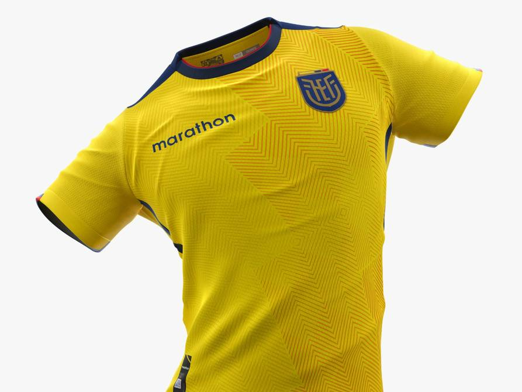

La Selección de Ecuador ya tiene su uniforme para jugar la Copa del Mundo Catar 2022.
El diseño de la indumentaria se inspiró en las cuatro regiones del país para vestir a la Tri.
Después de una larga espera, la Federación Ecuatoriana de Fútbol y la firma Marathon Sports
mostraron los diseños de la nueva colección, que incluye ropa de entrenamiento,
el uniforme oficial y dos indumentarias alternas.
Las prendas cuentan con un sistema de secado rápido y tejido antibacterial con protección a rayos UV,
ideal para cualquier clima. Además, tiene perforaciones con láser en partes estratégicas,
para una mejor circulación de aire y comodidad del deportista.
Camiseta principal: Está diseñada en un amarillo brillante, con un tramado frontal vertical.
La empresa explicó que esto simboliza “las ganas de ir hacia adelante, el empuje de la Tri”.
La bandera está presente en las mangas y costados de la camiseta.
Alterna 1: Esta camiseta combina el azul y azul marino, con detalles blancos en el cuello y mangas,
que incluyen también la bandera ecuatoriana.
“En la parte frontal presenta tramas y símbolos únicos que nos unen como país”, resume la compañía.
Estas líneas se asemejan a las pinturas y tejidos de las culturas indígenas ecuatorianas.
Alterna 2: Es color blanco, con un diseño vertical en la parte frontal. Así mismo,
cuenta con detalles en azul marino en el cuello y una línea roja para dar contraste.
En los extremos de las mangas también hay una franja azul, con la bandera ecuatoriana.
El balón de fútbol adidas Qatar 2022 Copa Mundial Al Rihla Oficial es el que se usará en la cita
mundialista; por los mejores del rey de los deportes. El logotipo de la Copa Mundial 2022
es una cinta que simboliza el infinito y la armonía.
Tamaño: 5.
Construcción de paneles.
Cosido a máquina para suavidad al tacto y máxima durabilidad.
Cámara de butilo para la mejor retención de aire.
Hecho con 100% TPU moldeado por inyección.
0943564312